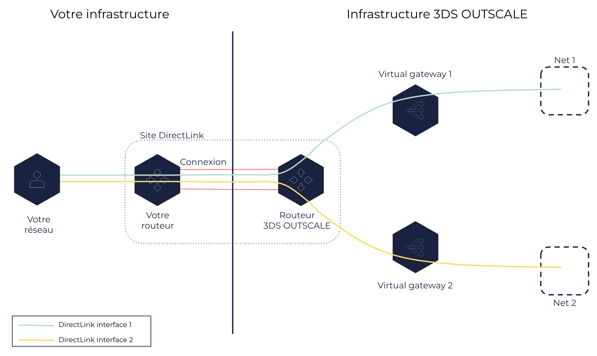

À propos de DirectLink
Vous pouvez créer des connexions DirectLink entre votre réseau et l’infrastructure OUTSCALE pour accéder à vos ressources dans un Net sans passer par un fournisseur d’accès à Internet. Les DirectLink interfaces vous permettent de configurer ces connexions en spécifiant à quel Net vous souhaitez vous connecter grâce à votre connexion.
Informations générales sur les connexions DirectLink
Une connexion DirectLink correspond à une connexion physique entre votre réseau et un site DirectLink, qui correspond à un site physique de l’infrastructure OUTSCALE. Cette connexion est une fibre optique 1 Gb Ethernet ou 10 Gb Ethernet qui vous permet d’accéder directement à vos ressources Cloud placées dans la Région correspondant à ce site sans passer par Internet. Un site correspondant à une Sous-région d’une Région, vous pouvez vous connecter à n’importe quel site de cette Région pour accéder à vos ressources dans l’ensemble de celle-ci.
|
Une extrémité de ce cable est connectée à votre routeur et l’autre extrémité est connectée à un routeur DirectLink OUTSCALE à travers la meet-me-room (MMR) du data center. Pour créer une connexion DirectLink, votre réseau doit :
-
Avoir un routeur ou une fibre optique dans le même data center que le site DirectLink.
-
Être connecté à un routeur DirectLink par une fibre monomode avec un connecteur LC : 1000BASE-LX (1310nm) pour 1 Gb Ethernet ou 10GBASE-LR (1310nm) pour 10 Gb Ethernet.
-
Avoir un routeur qui prend en charge le Border Gateway Protocol (BGP) et qui est configuré pour communiquer avec le routeur DirectLink à l’aide de l’Autonomous System Number (ASN) de 3DS OUTSCALE. Le routeur DirectLink devient ainsi votre neighbor.
L’ASN de 3DS OUTSCALE dépend de la Région :
-
50624 pour les Régions eu-west-2 et cloudgouv-eu-west-1
-
53306 pour la Région us-east-2
-
Si votre réseau interne ne se trouve pas dans le même data center que le site DirectLink, vous pouvez demander à un prestataire de service réseau d’y amener une fibre pour vous. Lorsque vous demandez une connexion DirectLink, 3DS OUTSCALE vous envoie une lettre d’autorisation (Letter of Authorization - LOA) qui vous autorise à connecter votre réseau au routeur DirectLink correspondant. Vous devez ensuite donner cette lettre à votre prestataire de service réseau afin qu’il demande au data center de connecter votre fibre optique au routeur DirectLink pour créer la connexion.
Vous pouvez créer des connexions DirectLink pour accéder à vos ressources se trouvant dans des Nets uniquement. Par défaut, un Net ne peut pas être joint par Internet. Les connexions DirectLink vous permettent de joindre votre Net directement depuis votre réseau interne, réduisant ainsi le phénomène de latence et améliorant le débit. Le Net dans lequel se trouvent vos ressources doit comporter au moins un Subnet et une virtual gateway attachée à celui-ci.
|
Les security groups utilisés pour le Net doivent autoriser les flux venant de votre réseau interne. |
Une connexion peut être dans un des états suivants :
-
pending: 3DS OUTSCALE a approuvé la connexion et vous a envoyé la LOA. La connexion est en cours d’initialisation. -
available: Le lien réseau est connecté à votre routeur et au routeur DirectLink, et la connexion est prête. -
disabled: Le lien réseau est déconnecté. -
deleted: La connexion est supprimée.
Connexions DirectLink et DirectLink interfaces
Pour accéder à vos ressources avec une connexion DirectLink, vous devez configurer cette connexion avec une ou plusieurs DirectLink interfaces. Une DirectLink interface correspond à un chemin réseau entre votre réseau interne et un de vos Nets, spécifié grâce à la virtual gateway attachée à celui-ci. Vous devez créer une DirectLink interface pour chaque Net auquel vous souhaitez accéder, et vous pouvez créer plusieurs DirectLink interfaces utilisant la même connexion DirectLink.
Lorsque vous créez une DirectLink interface, vous spécifiez :
-
Une connexion DirectLink :
-
Avec Cockpit, le nom et l’ID d’une connexion DirectLink.
-
Avec AWS CLI, l’ID d’une connexion DirectLink.
-
-
Un nom pour la DirectLink interface.
-
Un VLAN pour chaque DirectLink interface, afin de partitionner la connexion en plusieurs chemins d’accès réseau. Vous devez utiliser un VLAN unique pour chaque DirectLink interface créée pour une même connexion DirectLink.
-
Le Border Gateway Protocol (BGP) Autonomous System Number (ASN). Pour en savoir plus, voir la section Informations générales sur les connexions DirectLink ci-dessus.
-
Une DirectLink interface dans l’état
available.
Pour en savoir plus, voir Créer une DirectLink interface.
Vous pouvez également créer une DirectLink interface dont le propriétaire est un autre utilisateur OUTSCALE. Ce type de DirectLink interface se nomme DirectLink interface hébergée. Elle doit être confirmée par son propriétaire avant de pouvoir envoyer du trafic réseau. Pour en savoir plus, voir Créer une DirectLink interface hébergée et Accepter une DirectLink interface hébergée.
Vous pouvez également mettre à jour la maximum transmission unit (MTU) de votre DirectLink interface. La MTU est la taille en octets du paquet le plus volumineux pouvant être transmis via la connexion. Pour en savoir plus, voir Modifier la MTU d’une DirectLink interface.
|
La MTU d’une DirectLink interface est limitée à 1500 octets. |
Une DirectLink interface peut être dans un des états suivants :
-
confirming: La virtual interface est en attente de confirmation de son propriétaire. Après 7 jours, si la virtual interface n’est pas confirmée, son état devientexpired. -
pending: La virtual interface est créée et reste à l’étatpendingjusqu’à ce que votre routeur et le routeur DirectLink soient configurés. -
available: La virtual interface peut envoyer du trafic réseau. -
deleting: La virtual interface est en cours de suppression. Elle reste à l’étatdeletingjusqu’à ce que 3DS OUTSCALE déconfigure le routeur DirectLink. -
deleted: La virtual interface est supprimée et ne peut plus envoyer de trafic réseau. -
rejected: La virtual interface a été supprimée alors qu’elle était à l’étatconfirming. -
expired: Le propriétaire de la virtual interface n’a pas confirmé sa création dans le délai de 7 jours. La virtual interface ne pouvant plus être utilisée, vous devez en créer une nouvelle.
Le schéma suivant montre une infrastructure DirectLink :

Pages connexes
AWS™ et Amazon Web Services™ sont des marques de commerce d'Amazon Technologies, Inc. ou de ses affiliées aux États-Unis et/ou dans les autres pays.